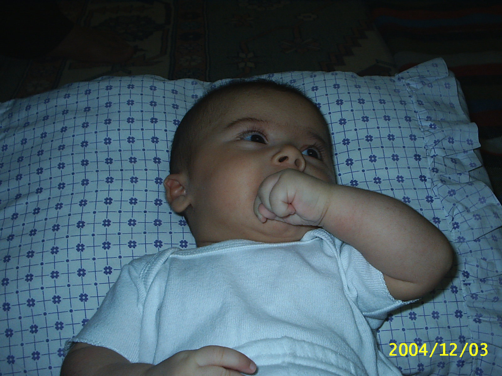
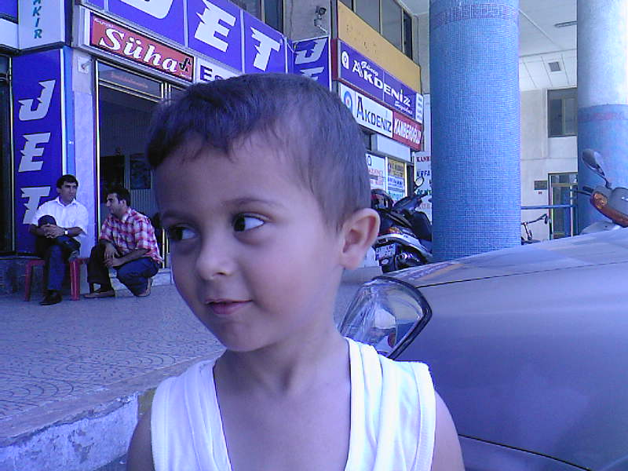

Eğitim Bilgilerim
| Tokat Vakıfbank Namık Kemal Anaokulu | 2009-2010 |
| Elazığ Bahçelievler İlkokulu (1.sınıf) | 2010-2011 |
| Karakoçan Nuri Özaltın İlkokulu (2.sınıf) | 2011-2012 |
| Afşin Teaş İstiklal İlkokulu (3. ve 4. sınıf) | 2012-2014 |
| Kayseri Kadir Has Ortaokulu (5.sınıf) | 2014-2015 |
| İskenderun Gülen Koleji (6.sınıf) | 2015-2016 |
| İskenderun Yükseliş Koleji(7. ve 8. sınıf) | 2016-2018 |
| İskenderun Paşa Karaca Anadolu İmam Hatip Lisesi | 2018-2022 |
| Sakarya Üniversitesi Bilgiyasar Mühendisliği | 2022-? |




Kısaca Hayatım
Ben Bedirhan Can.27 Ekim 2004 tarihinde İskenderun’da dünyaya geldim. Babamın memur olması sebebiyle dört yaşındayken Tokat’a taşındık. Ana sınıfını orada okuduktan sonra tayin sebebiyle Elazığ’a taşındık. Birinci sınıfı orada okuduktan sonra bu sefer Elazığ’ın bir ilçesi olan Karakoçan’a taşındık. Orada da ikinci sınıfı okuduktan sonra Kahramanmaraş’ın Afşin ilçesine taşındık. Üçüncü ve dördüncü sınıfımı orada okudum.
Tayin sebebiyle bu sefer Kayseri’ye taşındık.Beşinci sınıfı orada okuduktan sonra babam emekli oldu. Abim İskenderun’da lise kazanınca oraya taşındık. Ben de altıncı sınıftan lise öğrenimime kadar özel okulda okudum.Sekizinci sınıfın sonunda liselere giriş için olan sınava girdim ve yerel bir nitelikli liseyi kazandım.
Dokuzuncu sınıfın bitişindeki yazda ilk defa müzik festivaline gittim ve orada dört gün boyunca çadırda kaldım. Bu benim için çok güzel bir deneyimdi.Lisede onuncu sınıfın ortasında pandemi ortaya çıktı. Çıkan bu pandemi beni kişilik olarak çok etkiledi. Aynı zamanda lise hayatımı iki sene yaşamama sebep oldu. Bu yüzden lise hayatımı biraz daha yaşamak isterdim.
Lisenin sonunda üniversite sınavına girdim. Sınavdan sonra arkadaşlarımla kendi başımıza Mersin’e tatile gittik ve aynı arkadaşlarımla tekrardan müzik festivaline gittik. Bunlar benim için çok iyi deneyim oldu. Sınav sonucum açıklandıktan sonra tercih zamanı geldi ve hayallerimden biri olan bilgisayar mühendisliğini tercihlerime yazdım. Sonunda hedefime ulaştım ve buradayım.